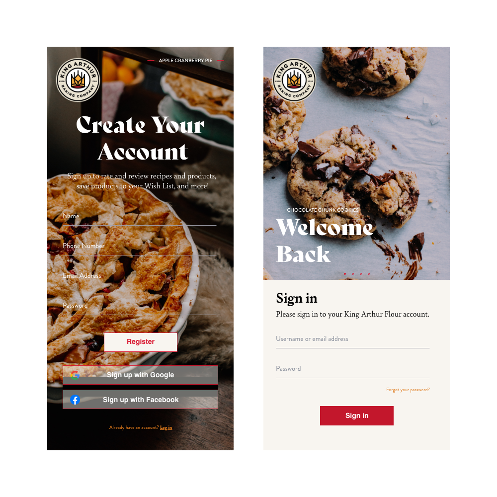
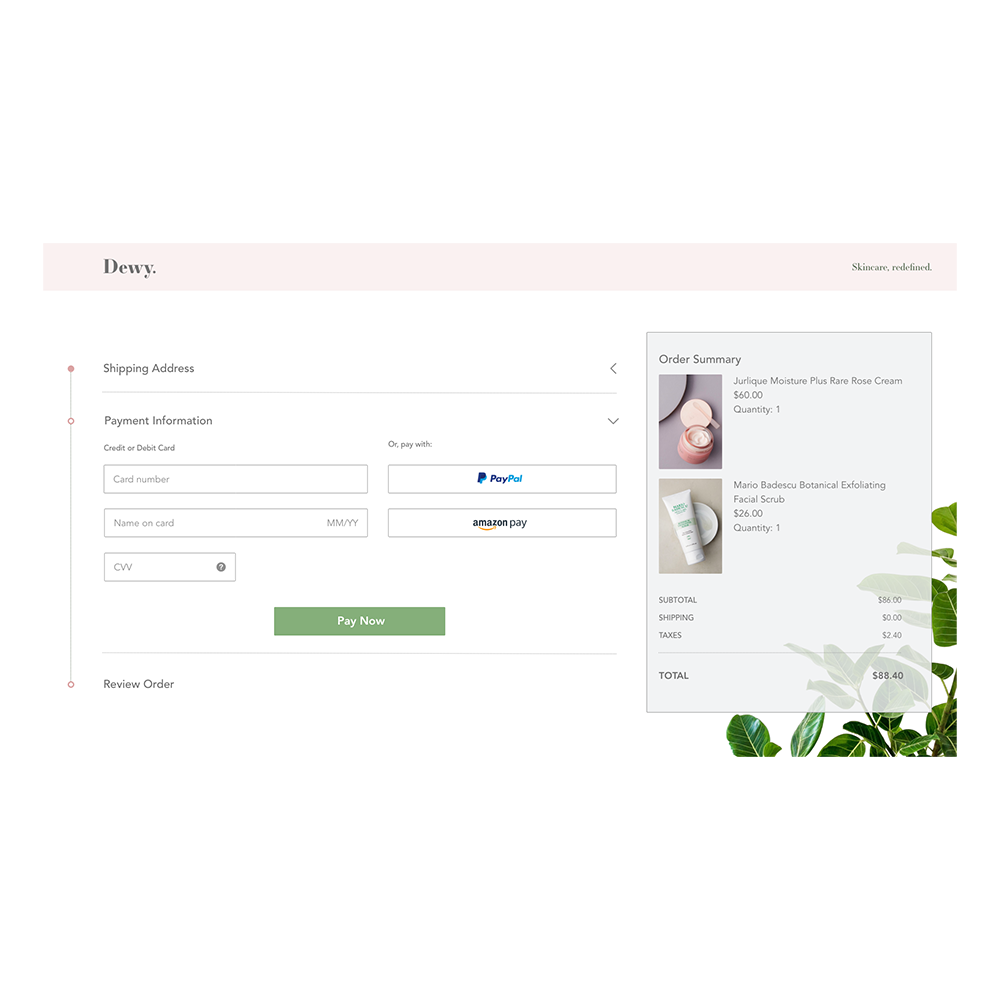
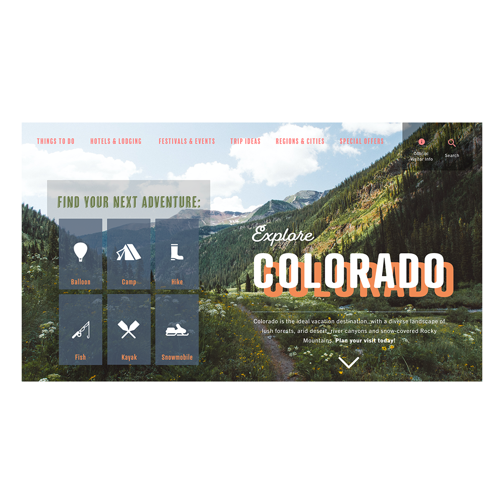
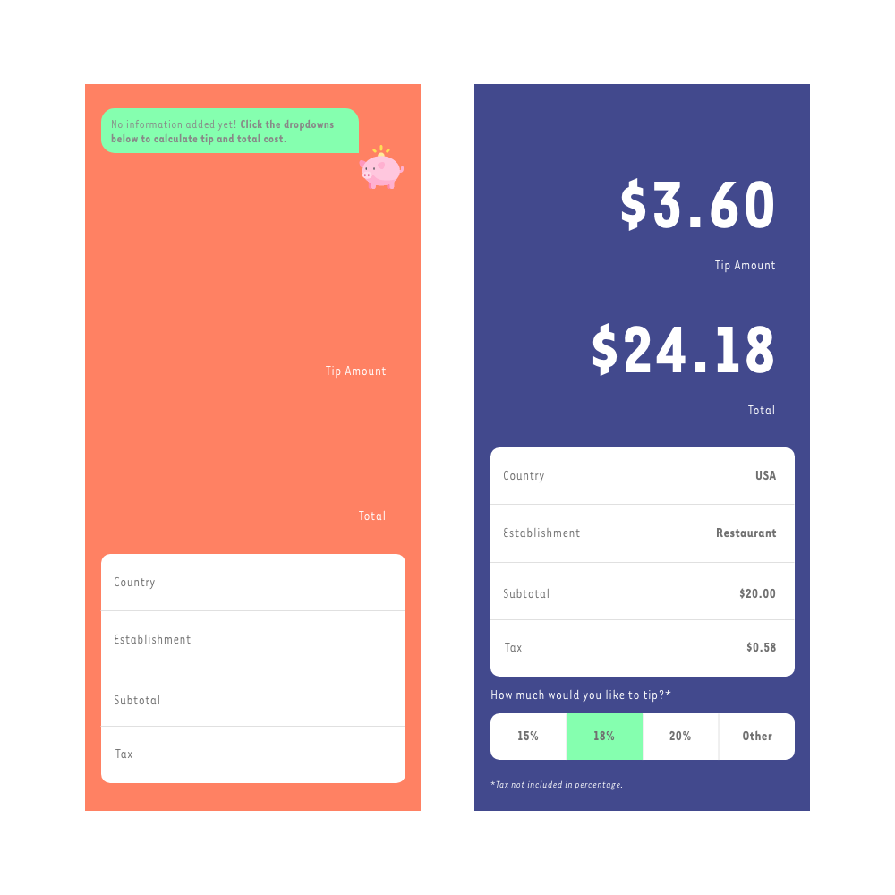
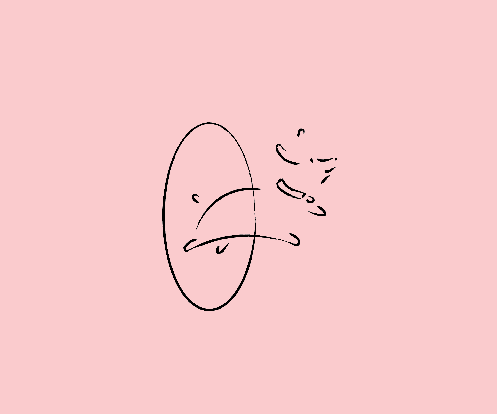
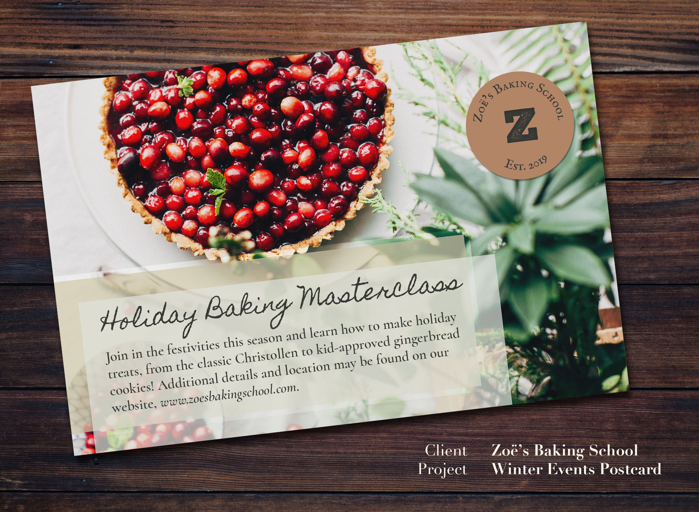

Zoë Morken
Work
About
Resume
Digital and Print Design
A steadily-growing collection of graphic design work for mobile, web, and print.






100% organic and website builder free 🎉
© Zoë Morken 2020
Back to top